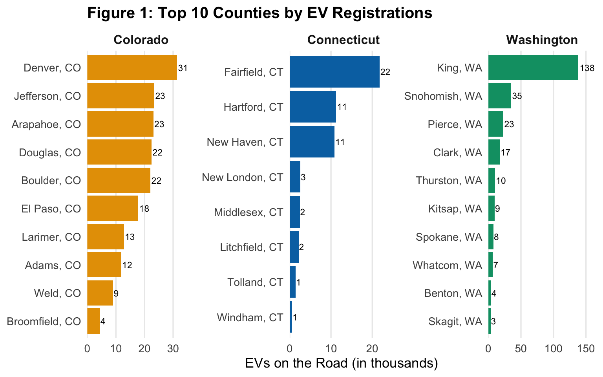
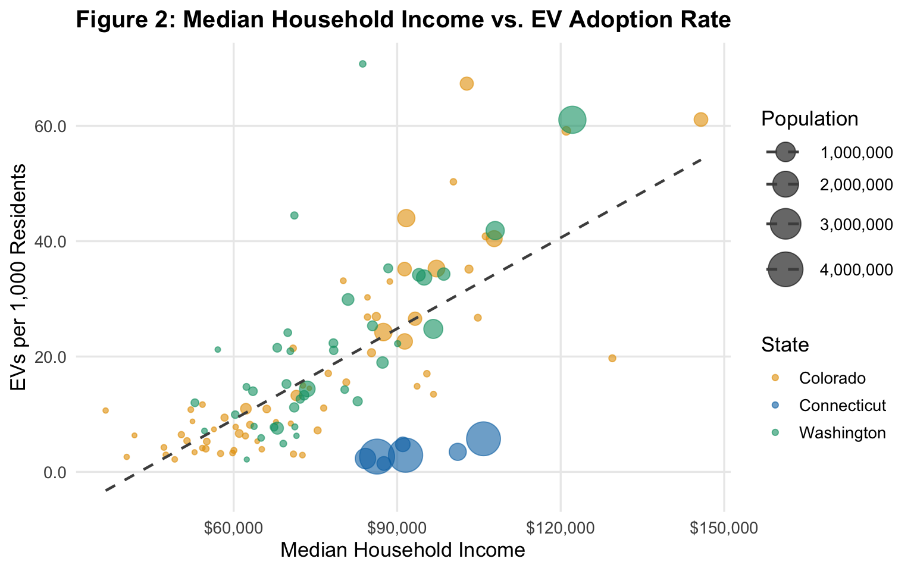
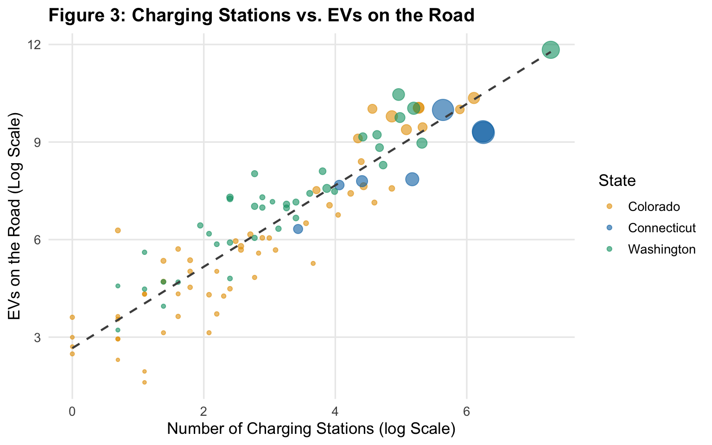
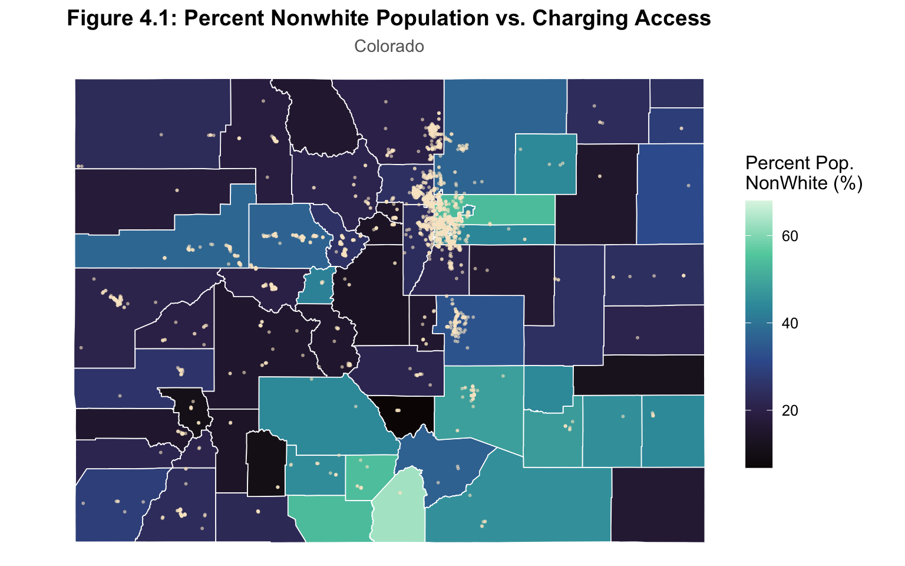
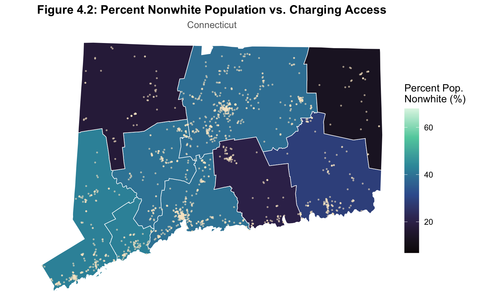
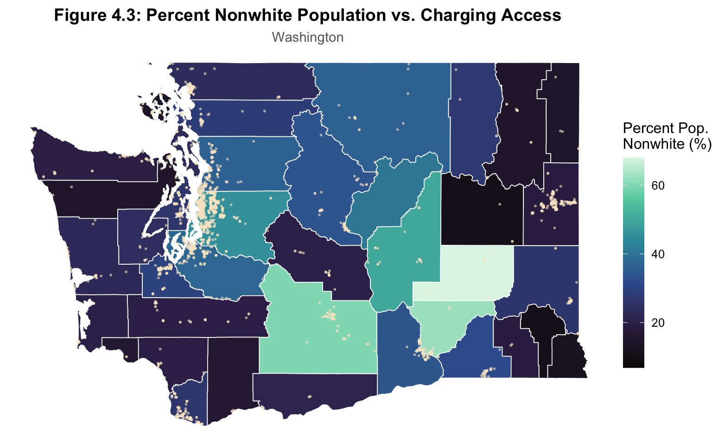
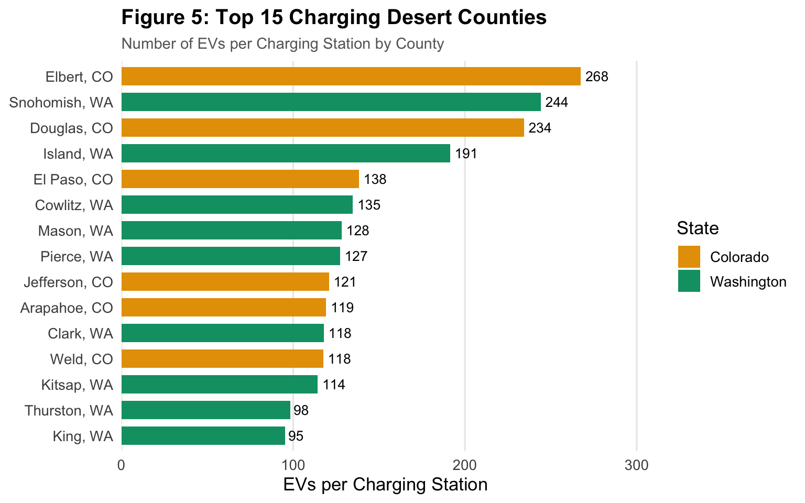

Stations & County Choropleth
Counties Studied
111
Total EVs on Road
528,131
Charging Stations
7,538
Avg EVs per Station
70.1
| State | Counties | Total EVs | Total Stations | EVs / Station | Total Population | Median Income | % Nonwhite |
|---|---|---|---|---|---|---|---|
| Colorado | 64 | 196,021 | 2,832 | 69.2 | 5,810,774 | $94,510 | 34.3% |
| Connecticut | 8 | 53,029 | 1,664 | 31.9 | 14,393,392 | $93,601 | 37% |
| Washington | 39 | 279,081 | 3,042 | 91.7 | 7,740,984 | $97,733 | 35.7% |
Project: ECNS 460 Term Project — EV Charging Infrastructure Gaps
Authors: Sawyer Bringle & Liam Maumenee
Montana State UniversityCourse: ECNS 460
Question: Where are the gaps between EV adoption and charging infrastructure, and which counties are most at risk of becoming charging deserts?







Charging-Desert Counties
22
Threshold (EVs / Station)
70
Qualifying Counties
87
A charging desert is a county where existing EV charging infrastructure is most stretched relative to the EV fleet already on the road.
Our definition: A county in the top quartile of EVs-per-station, restricted to counties with at least 50 EVs and at least one station (so the ratio is well-defined).
Why this matters: Counties with high EVs-per-station ratios face longer wait times, more competition for chargers, and a weaker case for new EV buyers — which can stall further adoption.
Charging Desert Threshold: We rank every qualifying county by its EVs-per-station ratio and take the 75th percentile as the cut-off. Any county at or above that line is flagged as a desert. We chose a quartile-based threshold instead of a fixed number because the data is heavily right-skewed and a fixed number would either flag almost every county or almost none, depending on where it’s set. A quartile is also relative, so the definition stays meaningful as adoption grows. With our current data the cut-off lands at roughly 70 EV’s Per Station.
Key Findings:Test R-Squared = 0.16 | Test RMSE = 2.465 | 86 Counties
We built a Lasso regression to complement the descriptive findings and identify which counties are on the steepest charging-growth trajectories.
Outcome: Because we did not have time-series EV registration data, we use proportional growth in station count between 2020 and 2024 as the outcome variable. Stations follow demand reasonably closely, so this is a defensible proxy for where EV adoption is accelerating. The model is, in effect, asking: holding current EV stock and 2020 infrastructure fixed, which counties are seeing the fastest expansion of charging supply?
Why Lasso: We chose Lasso over a more flexible model like random forest for two reasons. First, Lasso produces a sparse set of coefficients that can be interpreted directly and easily. Second, we covered Lasso in class and have a stronger working understanding of it than of less-familiar alternatives.
Predictors: Median household income, log population, percent nonwhite, median age, EVs per 1,000 residents, stations open by 2020, stations per 100,000 residents, and an early-adopter indicator.
Tuning: Penalty parameter tuned by 5-fold cross-validation on a 75/25 train-test split, then evaluated once on the held-out test set.
What the coefficients say: The retained coefficients run in the expected directions. Counties with more stations already in place by 2020 see slower proportional growth than counties with fewer; counties with higher current per-capita EV adoption see faster station expansion. Demographic predictors enter with smaller coefficients, indicating that 2020 infrastructure and current adoption are doing most of the predictive work.
Assumptions:| Rank | County | Pred. Growth |
|---|---|---|
| 1 | Broomfield, CO | 584% |
| 2 | Gilpin, CO | 540% |
| 3 | Clear Creek, CO | 524% |
| 4 | Moffat, CO | 431% |
| 5 | Morgan, CO | 431% |
| 6 | Summit, CO | 416% |
| 7 | Douglas, CO | 402% |
| 8 | Fairfield, CT | 385% |
| 9 | Rio Blanco, CO | 381% |
| 10 | Alamosa, CO | 379% |
| 11 | Otero, CO | 369% |
| 12 | Pend Oreille, WA | 363% |
| 13 | Middlesex, CT | 362% |
| 14 | Eagle, CO | 357% |
| 15 | Pitkin, CO | 356% |
| 16 | Hartford, CT | 346% |
| 17 | New Haven, CT | 340% |
| 18 | Snohomish, WA | 328% |
| 19 | Windham, CT | 322% |
| 20 | Pierce, WA | 320% |
The gap is not where you’d expect. Across Colorado, Connecticut, and Washington, the counties where EV adoption has run furthest ahead of charging build-out are predominantly suburban and exurban commuter belts. Places like Snohomish (WA), Douglas (CO), and El Paso (CO).
Using the 75th percentile of qualifying counties, a rough cutoff of 70 EVs per station gave us a great baseline. 22 of 87 qualifying counties cross that line, concentrated in WA (14) and CO (7), with only 1 in CT. Deserts hold a disproportionate share of the EV fleet. The 20% of counties flagged as deserts hold roughly 71% of all EVs across the three states. The median desert county has ~118 EVs/station versus ~26 in non-desert counties — about a 4.5x difference.
Lasso further confirms the infrastructure gap. With a test R-Squared of 0.162, the Lasso shows that 2020 infrastructure stock and current per-capita adoption dominate the prediction of where new stations grow next, while demographic predictors enter with smaller coefficients than we hypothesized in Stage 2.
The interactive map is a great tool that state planners, EV station developers, and anyone curious about where EV stations are placed, or if their county is at risk for longer wait-times at charging stations.
tigris R package. County polygons for the spatial join and choropleth.R | tidyverse | sf | tigris | janitor | tidymodels (glmnet) | leaflet | plotly | DT | Quarto | Shiny
References Full citations to be added in the project report.Course | ECNS 460 — Spring 2026
Instructor | Nick Hagerty
Authors | Sawyer Bringle & Liam Maumenee
Audience | State transportation planners, EV charging operators, and policymakers — the stakeholders who decide where the next round of charging investment goes.
Source code | 01_data_cleaning.R through 04-dashboard.qmd in the project repository.